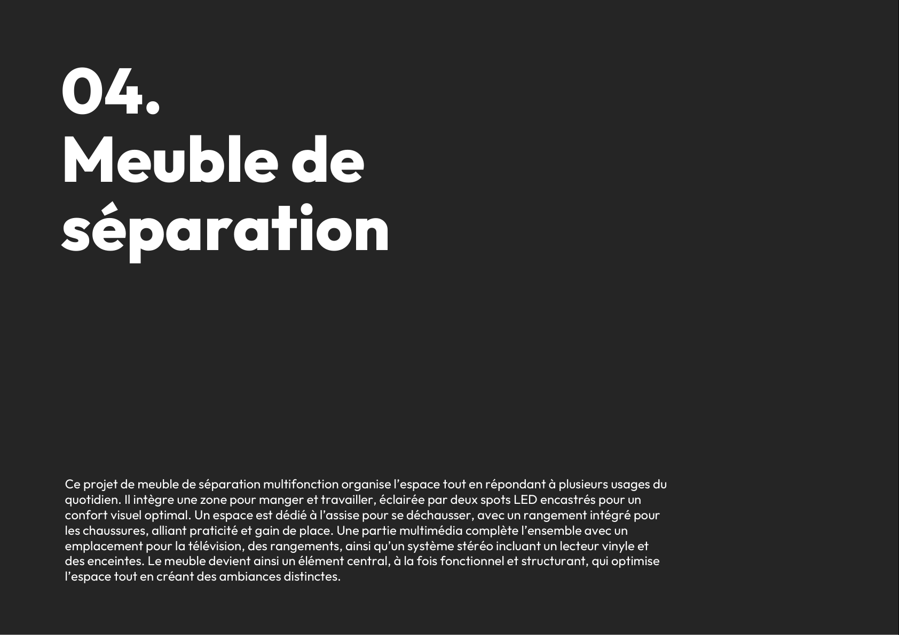

← Retour au portfolio

02 · Installation conceptuelle
Le rêveur de la forêt
Une écorce en papier mâché brûlée au chalumeau devient le support d’un parcours symbolique composé d’escaliers, d’échelles et d’une porte fermée. Le projet évoque une quête intérieure, entre mémoire, rêve et imaginaire.
